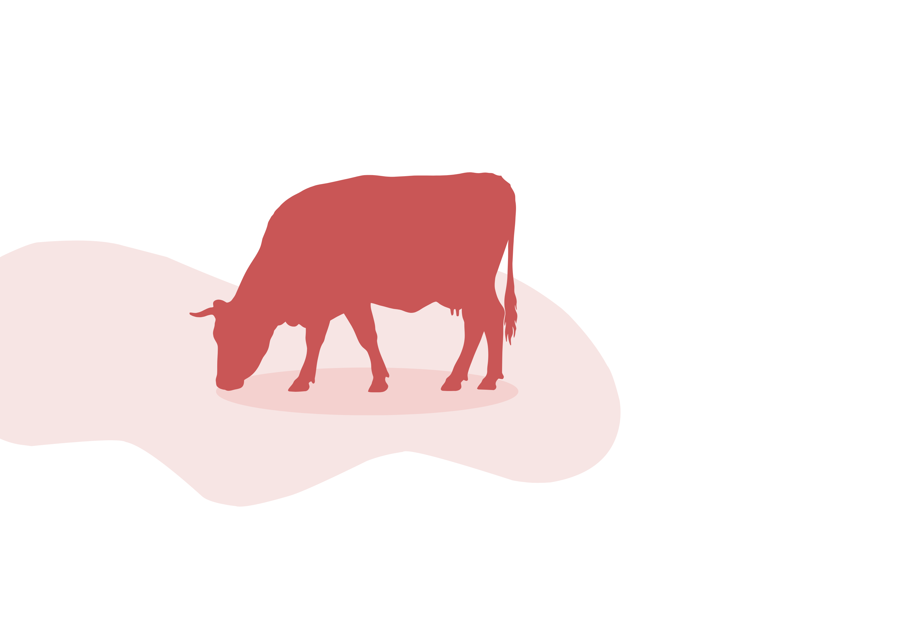

Works offline
Works offline


Add Animals
See each animal’s
full history.
Store key details and view a complete
timeline of records, movements and updates.

A simple workflow from record entry to ready-to-share exports.

Spend less time managing paperwork and more time running your farm.
Many livestock apps are either built for one species or grow into full farm-management systems. LivestockBook takes a simpler approach.
Explore the app’s features
Add Animals
Store key details and view a complete
timeline of records, movements and updates.
Log Records
Log movements, weights, treatments,
health checks and other records.


Export Files
Choose the animals, records and date range
you want,
then export exactly what you need.
Ready to Share
Create polished PDF and CSV files with your farm details, ready to print, share or provide when needed.


Yes. LivestockBook is designed to work offline, and most features can be used without an internet connection. A connection is only needed for things like subscriptions and support links.
LivestockBook supports cattle, sheep, pigs, goats, chickens, ducks, turkeys, geese, donkeys, horses, buffalo, rabbits, alpacas, llamas, camels and ostriches.
You can export your animal register and records as PDF or spreadsheet files, filtered by the animals, record types and date range you choose.
Yes. You can set up multiple farms, paddocks and groups, and organise your animals and records across them.
All features are included in the free plan, with a limit of 100 records and 20 animals.
Yes. LivestockBook is available for iPhone on the App Store and for Android on Google Play.